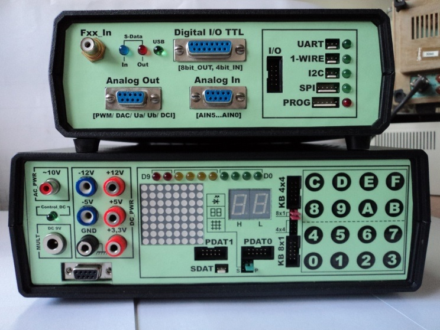
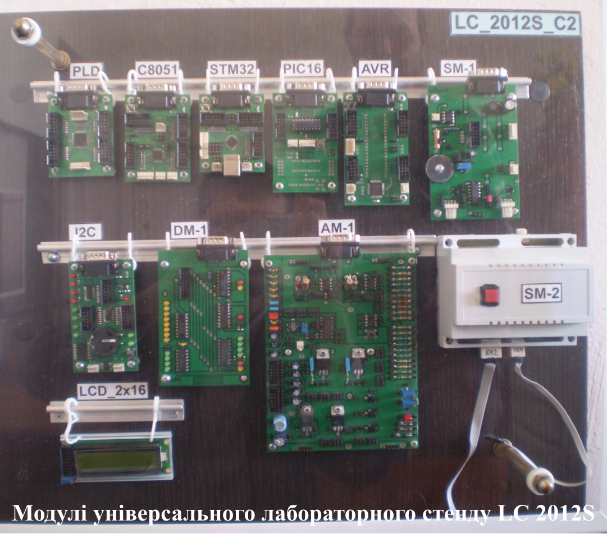
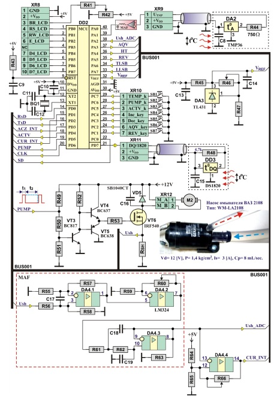
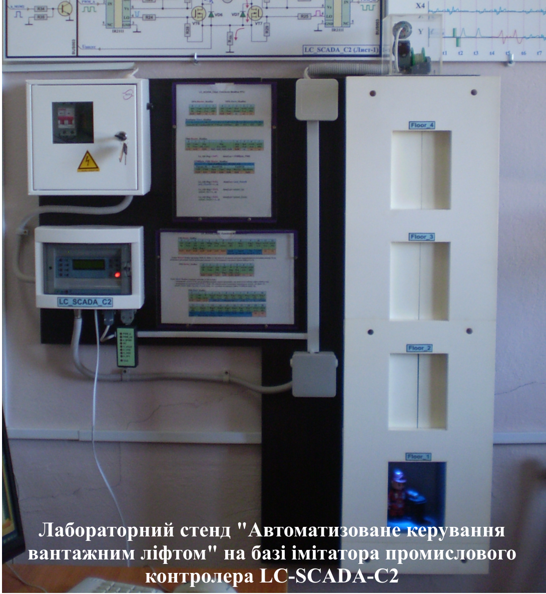

Лабораторна База
Кафедри комп'ютеризованих систем управління
{{ slide.text }}
Всі професійні дисципліни викладаються в комп’ютеризованих аудиторіях та лабораторіях:
Нове обладнання і переоснащення лабораторій дозволило істотно підняти рівень практичної значимості лабораторних занять на нових і модернізованих лабораторних стендах. Загальна площа спеціалізованих навчальних лабораторій (408 і 415), спеціалізованих аудиторій та комп’ютерних класів (416а і 424) складає близько 210 м2.
Вагомий внесок у розвиток та удосконалення лабораторної бази кафедри зроблено старшим лаборантом Білаєм Олегом Михайловичем, який є висококваліфікованим фахівцем в галузі електроніки та мікропроцесорної техніки. Його руками створено сучасну навчальну лабораторію з вивчення електронної та мікропроцесорної техніки.
Комп'ютерні класи
Всі професійні предмети викладаються в комп’ютерних класах,
обладнаних сучасною комп’ютерною технікою (спонсор − компанія
Geeks For Less), а також у спеціалізованих лабораторіях з
навчальними стендами.
В комп'ютерних класах проходять лабораторні та практичні заняття з
дисциплін:
-
1. Інформаційні технології систем управління та захисту
інформації:
- – мережеві операційні системи, Windows server family;
- – програмне забезпечення мережевих інформаційних технологій, Apache HTTP-сервер, поштовий сервер Dovecot;
- – захист інформації в комп’ютерних мережах;
- – пошук та усунення несправності програмного забезпечення;
- – планування відмово-стійкості та захищеності програмно-апаратного комплексу;
- – створення віртуальної машини, основні принципи віртуалізації, установка сучасної операційної системи Windows;
- – установка та адміністрування операційної системи Linux, Red Hat family;
- – порівняльний аналіз Sendmail та Postfix;
- – розподілена система керування версіями Git;
- – крос-платформові клієнт-серверні додатки, Puppet;
- – засоби віртуалізації на рівні операційної системи, Linux Containers;
- – основні поняття інформаційної безпеки ОС. Мережевий екран Firewall.
-
2. Проектування програмних засобів віддаленого
контролю:
- – визначення та класифікація віддалених систем контролю, системне і прикладне програмування;
- – Big Data, хмарні технології оброки інформації;
- – API, прикладний програмний інтерфейс;
- – внутрішня структура програмної оболонки Iphone;
- – внутрішня структура програмної оболонки Android;
- – делегування, контролер подання таблиці, UITableView, розбір xml,MVC, програмування парадигм;
- – хмарний сервіс ThingSpeak;
- – використання делегування для створення загального віджета − GridView;
- – перегляд способів обробки UIViewController, управління сегментами;
- – програмування за допомогою UIScrollView, UINavigationController;
- – розробка API "Hello World";
- – розробка рівня доступу до даних з кодом EF (repository pattern);
- – кешування даних на різних рівнях хмарного сервісу;
- – розробка API хмарного сервісу ThingSpeak;
- – створення програми калькулятора за допомогою конструктора інтерфейсів та xCode;
- – створення медіа-галереї, розробка XML фотографій, контролер перегляду фотографій;
- – створення програмного додатку на програмній оболонці Android;
- – створення програмного додатку на програмній оболонці Iphone;
- – аудіокадри iPhone, перегляд UISlider;
- – локалізація, CoreLocation і MapKit;
- – SOLID, об'єктно-орієнтоване програмування;
- – розширення контролера перегляду фотографій, асинхронне завантаження піктограм;
- – відтворення аудіофайлів за допомогою API;
- – розробка контролера для відтворення відео;
- – проект спортивного каталогу;
- – проект галереї для безкоштовної та преміум версії.
-
3. Об’єктно-орієнтоване програмування:
- – імперативне програмування;
- – loop, if, switch statement, variables, constants, etc... ;
- – принципи ООП - абстракція, успадкування, поліморфізм;
- – створення абстракції;
- – керування пам’яттю;
- – особливості xCode;
- – використання xCode;
- – умови перегонів;
- – мертва точка та синхронізація;
- – схема даних;
- – засоби мови SQL;
- – шаблони Factory;
- – шаблони Observer;
- – шаблон SOLID;
- – шаблон GRASP
-
4. Адміністрування комп’ютерних мереж:
- – основні принципи балансування навантаження;
- – балансування навантаження за допомогою F5 Load Balancer;
- – основні принципи та реалізація маршрутизації потоків інформації в локальних мережах;
- – налагодження основних серверів протоколів прикладного рівня мережевої архітектури (http, smtp, ftp, pop3/imap, ssh);
- – NetAPP: поняття кластеру в ONTAP, доступні протоколи в системах збереження даних (SAN, NAS), захист даних.
-
5. Системи і мережі передачі даних:
- – загальні мережеві поняття;
- – стандартні топології локальних мереж та стандартні локальні мережі;
- – рівні мережевої архітектури;
- – обладнання локальних мереж;
- – захист інформації у локальних мережах;
- – міжмережевий протокол IP та стек TCP/IP.
-
6. Спеціалізовані системи управління базами даних:
- – MariaDB;
- – MySQL Workbench;
- – Galera Cluster;
- – Internet Information Services (IIS);
- – MongoDB.
-
7. Бази даних:
- – MS SQL;
- – Postgress.
Лабораторія електроніки та мікросхемотехніки

Обладнана для проведення лабораторних робіт з дисциплін «Комп’ютерна електроніка та мікросхемотехніка», «Мікропроцесорні комплекси та системи», «Комп’ютеризоване проектування цифрових електронних схем», «Мікропроцесорні системи управління технічними засобами суден». В ній присутні:
Учбовий програмно-апаратний комплекс LC_2012S;
Базовий модуль LC_2012S
Тематика практичних занять і лабораторних робіт:
-
1. Аналогова схемотехника:
- – P-N перехід. Дослідження напівпровідникового діода;
- – дослідження стабілітрона. Параметричний стабілізатор;
- – випрямлячі. Згладжуючі фільтри;
- – біполярний транзистор. Статичні характеристики транзистора;
- – компенсаційний стабілізатор напруги;
- – біполярний транзистор в ключовому режимі роботи;
- – польовий транзистор в ключовому режимі роботи. Управління кроковим двигуном;
- – операційний підсилювач. Лінійний режим роботи;
- – операційний підсилювач. Імпульсний режим роботи;
- – аналого-цифровий перетворювач;
- – цифро-аналоговий перетворювач
LC 2012S. Зняття статичних характеристик біполярного транзистора
-
2. Цифрова схемотехніка (2 режими: активний /
симуляція)
- – дослідження логічних елементів;
- – тригери;
- – лічильники;
- – регістри;
- – мультиплексори;
- – дешифратор.
Цифрова схемотехніка
-
3. Інформаційно-вимірювальні системи, елементи та пристрої
систем автоматики:
- – оптичні датчики і оптоелектронні компоненти (комплексна робота);
- – ультразвукові датчики (комплексна робота);
- – ємнісні датчики і рівнеміри (комплексна робота);
- – інтегральні акселерометри;
- – інтегральні датчики тиску (комплексна робота).

Лабораторний стенд "Автоматизована система підготовки технологічних розчинів" на базі імітатора промислового контролера LC-SCADA-C1

Стенд призначений для ознайомлення з організацією стандартного протоколу Modbus на базі імітатора промислового контролера (ІПК) LC_SCADA_C1 (автоматизація підготовки технологічних розчинів). Modbus - відкритий комунікаційний протокол (розроблений компанією Modicon), заснований на архітектурі '' клієнт-сервер '', що описує формат повідомлень і способи їх передачі в мережі, що складається з різних електронних пристроїв і контролерів з програмованої логікою. Може використовуватися для передачі даних через послідовні лінії зв'язку RS-485, RS-422, RS-232, а також мережі TCP / IP (Modbus TCP).

Принципова схема управляючого модуля імітатора промислового контролера
В якості імітатора промислового контролера (ІПК), в схемі використовується МК AVR ATMega16 (DD2), що забезпечує обмін по ряду стандартних функцій промислового протоколу Modbus RTU з провідним Master-PC.
До роз'ємів XR8, XR10 підключаються LCD-дисплей і кнопки пульта автономного управління. Контрастність LCD-дисплей забезпечує підбудовується дільник напруги R41, R42.
Джерело опорного напруги VREF, що забезпечує роботу АЦП мікроконтролера побудований на інтегральному прецизионном ІОН TL431 (DA3) з елементами обв'язки R45-R47, C13, C14.
Контроль температури технологічного розчину здійснюється аналоговим датчиком TMP36 (DA2), підключеному до гнізда XR9 і DS1820 (DD3) з цифровим виходом по інтерфейсу 1-Wire (роз'єм XR11). Як електронасоса води (M2) встановлено насос омивача ВАЗ-2108 типу WM-LA2108 з технічними параметрами: напруга живлення Ud = 12 [V], тиск P = 1,4 [kg / cm2], продуктивність Cp= 8[mL/sec ], струм споживання Is = 3 [A].
MOSFET транзистор VT6 є силовим елементом, коммутирующим ток електронасоса M2. Для скорочення часу включення і виключення потужного польового транзистора VT6, як емітерного повторювача використовується комплементарная пара транзисторів VT4-VT5, яка встановлена між висновком PD5 MК і затвором керованого транзистора VT6. Це дозволяє також знизити навантаження по струму на вихідний каскад керуючого MK.
Продуктивність насоса визначається довгою позитивного імпульсу (t1) сигналу широтно-імпульсної модуляції [Pump], що надходить з МК. Транзистор VT3 інвертує сигнал [Pump] і забезпечує необхідний струм транзисторів повторювача VT4, VT5.
Між висновком Source (витоком) VT6 і загальним проводом встановлений вимірювальний шунт Rsh для контролю струму електронасоса M2. Сигнал з шунта (Ush) надходить на попередній диференційний підсилювач DA4.1. Операційний підсилювач DA4.2 включений за схемою неінвертуючого підсилювача. Підлаштування резистором R60 здійснюється установка максимального значення струму електронасоса до величини опорного напруги АЦП. Таким чином досягається максимум шкали діапазону вимірювання АЦП.
Автоматизована система підготовки технологічних розчинів
Лабораторний стенд "Автоматизоване керування вантажним ліфтом" на базі імітатора промислового контролера LC-SCADA-C2
Призначений для ознайомлення з організацією стандартного протоколу Modbus на базі імітатора промислового контролера (ІПК) LC_SCADA_C2. Modbus - відкритий комунікаційний протокол (розроблений компанією Modicon), заснований на архітектурі '' клієнт-сервер '', що описує формат повідомлень і способи їх передачі в мережі, що складається з різних електронних пристроїв і контролерів з програмованої логікою. Може використовуватися для передачі даних через послідовні лінії зв'язку RS-485, RS-422, RS-232, а також мережі TCP / IP (Modbus TCP).

Як імітатор промислового контролера, в схемі використовується МК AVR ATMega16, що забезпечує обмін за стандартом протоколу Modbus RTU (аналогічно рис.1.3). Основна відмінність схеми представляють модулі оптичних датчиків MSF1- MSF4, MCDS, MODS і силова частина управління двигунами підйому кабіни (M1) і дверей кабіни (M2) ліфта (рис.2.1).
Основними елементами силової частини управління двигунами M1, M2 є інтегральні полумостового драйвери DA2, DA3 (тип IR2111) здійснюють управління затворами MOSFET транзисторів VT4-VT7 моста. MК за допомогою 8-ми бітного таймера, здійснює формування імпульсів ШІМ-модуляції (сигнал pwm), параметри якого визначають швидкість, напрямок обертання і останов двигунів.
Для стійкої роботи драйверів, сигнал pwm надходить на ключі VT1, VT9, які підвищують амплітуду імпульсів до 10-12V, формуючи при цьому прямий (pwm_A) і інверсний (pwm_A #) керуючі сигнали. При відповідній скважности імпульсів q < 2 пріоритет отримують транзистори VT4, VT7 лівої діагоналі моста. При цьому, струм двигуна протікає у напрямку PA → PВ, що викликає обертання двигуна, відповідне підйому кабіни ліфта.
Принципова схема управляючого модуля імітатора промислового контролера
Для економії апаратних ресурсів, загальної схеми драйверів, передбачено почергове включення двигунів M1 і M2 до клеми живлення PA. Перемикання двигунів здійснює електронний ключ на елементах VT2, R34, R35, K1, VD1 по сигналу [b_M1M2] MK.
Оптичні датчики контролю поверхів SF1- SF4 ідентичні за своєю структурою і складаються з датчика на відображення VO1 і елементів R1-R3, C1. C виходів датчиків формуються для МК відповідні сигнали b_SF1 ... b_SF4.
У кабіні ліфта передбачені додаткові датчики ODS і CDS, що визначають положення відкритих і закритих дверей відповідно. Між висновком Source (витоком) VT6, VT7 і загальним проводом встановлений вимірювальний шунт Rsh для контролю струму електродвигунів. Сигнал з шунта (Ush) надходить на схему підсилювача і фільтра (аналогічно рис.1.3).
На пульті автономного управління ліфтом встановлений роз'єм
DB15F для підключення до основних контрольних точках модуля
LC_SCADA_C2:
DB15F [1] - pwm_A (DCM_drv), сигнал управління драйвером DA2.
DB15F [2] - pwm_A # (DCM_drv #), сигнал управління драйвером
DA3.
DB15F [3] - b_M1M2 (bit_CabDoor), сигнал комутації силових
виходів драйвера до одного з двигунів Cab_DCMotor або
Door_DCMotor.
DB15F [5] - Ush_DA1.3, сигнал c шунта струму, після посилення і
фільтрації.
DB15F [6] - CD_Sens, сигнал c фотодатчика, що фіксує закриття
дверей кабіни ліфта.
DB15F [7] - OD_Sens, сигнал c фотодатчика, що фіксує відкриття
дверей кабіни ліфта.
DB15F [8] - F1_Sens, сигнал c фотодатчика, що фіксує положення
кабіни ліфта на 1-му поверсі.
Автоматизоване керування вантажним ліфтом по протоколу Modbus